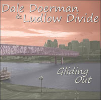

|  |
Gliding Out,
a double-LP length CD from Dale Doerman
& Ludlow Divide is NOW AVAILABLE online at CD
Baby, including the title track Gliding
Out
(which was featured at
Cincinnati’s Paddlefest 2009) and twenty other original songs
crossing the genres of blues, country, folk and rockabilly.
You can also purchase song
downloads directly
from just about every online music download service, including CD
Baby, Amazon
MP3, & iTunes.
To listen to the album in it's entirety and get more information, check out our Facebook page.
Questions
and comments are welcome.
Contact:
Featured
Performers:
Dale Doerman:
Chris Doerman:
Adam Sanregret:
Dave McKinney: |
Vocals,
Harmonica, Acoustic and Electric Guitar
Acoustic & Electric Guitar, Dobro, Lap Steel,
Mandolin, Organ, Acoustic & Electric Piano,
Electric Bass
Electric and String Bass
Drums |
Produced by Chris Doerman
All songs written by Dale Doerman © 2009
|
|